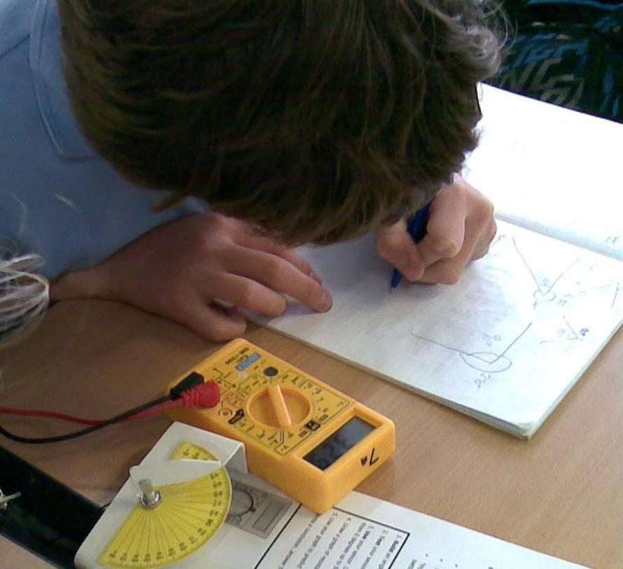

The Use of Artificial Education in Education
An excellent article (link below) about the use of AI in education, which agrees 100% with my teaching leadership experience and other education research papers. I have even said
"The ability to create sophisticated-looking outputs without understanding them is the opposite of education".
This echoes earlier similar issues when school students first had access to encyclopaedias on CDROM, then the internet, then mobile phones in class. I recall being stunned when Sir Peter Gluckman (Prime Minister's Chief Science Advisor at that time) asked me "Why should children learn the names of the planets when they can look these up on the internet?"
Knowing the name of something tells you nothing about the thing itself. It was not until years later that I found Richard Feynman had said something similar, so I feel in good company here. The point of knowing the names is to start a vocabulary for a dialogue that builds deeper learning and understanding. Learning names is a start, not the end! It is the beginning of building memories to draw upon later.
If AI is used to produce, on the surface, an excellent output, but the learner has not mentally engaged in a meaningful dialogue as part of the process, no learning as occurred. The AI started and ended the task. The learner has built no new memories.
Again, this appears to be another version of an old debate. If the product is the goal, NOT the learning, teachers should recognise this and adjust their teaching. Use AI to speed up getting learners to where they WILL learn and engage their brains!
Ironically, some Universities are reverting to face-to-face assessments to verify learners understanding, while other organisations, such as the Open Polytechnic, want more (cheaper?) automated marking.
A sign that Education (compared to Science) is still an immature discipline!
Key ideas
- AI is another technology that can be misused by learners for plaigarism. This is not new: learners handed in the work of others from textbooks, CDROM Enclopaedias, websites and assignment farms.
- Uncritical use of AI in education can result in learners outsourcing their thinking. They learn nothing but can produce sophisticated-looking outputs.
- In contrast, learners supported to be confident readers and writers benefit from using AI as a tool to improve their own work.
- Scientist and STEM education leader Michael Fenton warns against trivialising important first steps to building vocabulary for discipline specific learning. The point of knowing the names of things is to start a vocabulary for a dialogue that builds deeper learning and understanding.
- AI can be a powerful tool when used AFTER foundational learning, not as a substitute for it.
- AI use must be carefully planned, understood, and accounted for when teaching and assessment marking.
""See that bird? It’s a brown-throated thrush, but in Germany it’s called a Halzenfugel, and in Chinese they call it a Chung Ling; and even if you know all those names for it, you still know nothing about the bird." - Dr Richard Feynman
Further reading
AI Assessment Scale (AIAS) - A practical framework to guide the appropriate and ethical use of generative AI in assessment design, empowering educators to make purposeful, evidence-based decisions.
Opinion - When students' brains go quiet
Dr Alex Sims and Dr Dulani Jayasuriya at the University of Auckland authored an opinion piece. They write that AI-assisted learning may hinder deep understanding according to an MIT study. Students who rely on AI tools from the outset show reduced brain activity and poorer recall compared to those who research or write from memory.
The authors discuss, as an example, a compelling MIT Media Lab study involving three groups: those who used AI (ChatGPT), those who used Google for research, and those who relied solely on memory. Students using AI showed significantly reduced neural engagement, with brain activity resembling a “standby mode.” When asked to reproduce their essays without AI an hour later, they could not.
In contrast, students who used Google or memory retained better recall and exhibited higher cognitive engagement, suggesting that the process of searching, evaluating, and synthesizing information is crucial for learning. The study likens this to trying to learn to swim by watching someone else in the water who is actually swimming.
The “Brain-to-LLM” concept involves learners writing from memory THEN using AI to enhance their work. Students work improved and cognitive engagement was maintained. In comparison, learners using AI first had low cognitive engagement.
The key takeaway: What makes the Brain-to-LLM discovery interesting, is that it proves that AI doesn’t have to diminish cognition. The sequence and process of learning matters more than the tool.
"It’s the difference between using a calculator after understanding math versus never learning math because calculators exist, a distinction that could determine whether we’re educating minds or merely training prompt engineers."
When students' brains go quiet - Newsroom
According to Michael Fenton, the MIT study is one of many recent education research papers that report similar findings. AI use must be carefully planned, understood, and accounted for in assessment marking.
Year 10 mathematics: Building foundational knowledge with hands-on Data Detective sensor investigations.
YouTube video
Michael demonstrates using AI as a partner to give new life to the classic Apple II game Transylvania.
This project is more than nostalgia. It’s an experiment in how AI can act as a creative partner when teaching Science or Technology. This example does more than breathe new life into simple text-based adventure games.
It demonstrates human/AI partnership to:
- Compose an original soundtrack inspired by the game’s eerie atmosphere.
- Generate artwork that reimagines the world of Transylvania.
- Expand knowledge of musical genres, art styles, and the history of computer gaming.
Enjoy the original composition and lyrics with a preview of the reimagined world of Transylvania!